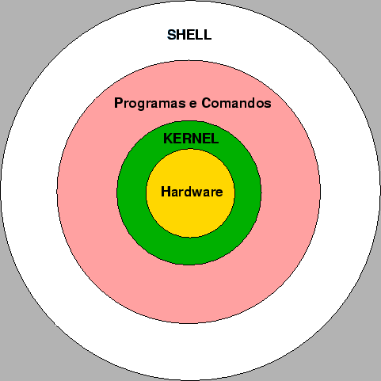
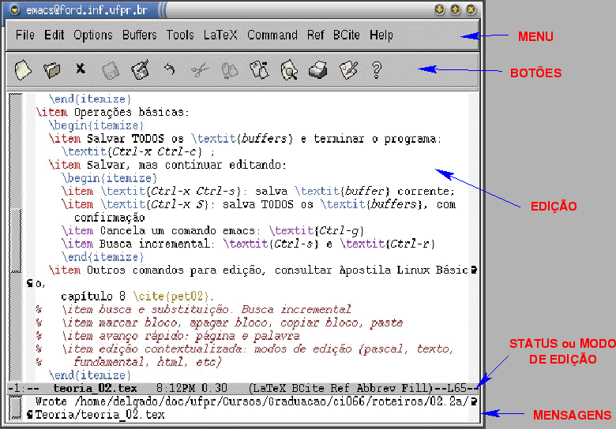
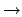
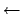

CI066 - Oficina de Programação
Notas de Aula # 01
Prof. Armando Luiz N. Delgado
- Ementa, objetivos, bibliografia básica e informações importantes
quanto ao uso dos recursos computacionais dos laboratórios do DInf
podem ser encontrados na página web da
disciplina;
- Na página referente ao
1º semestre 2004
constam: Conteúdo
programático, critérios de avaliação, diário de notas e frequência
dos alunos, e acesso ao material didático;
- Horários de atendimento a alunos são
encontrados na página do professor da
disciplina;
- O aluno deve sempre consultar a seção AVISOS IMPORTANTES
ao final da página do
1º semestre 2004. Lá estará o Diário
de Notas e Freqüência, bem como outras notícias e observações
relacionadas ao andamento da disciplina no semestre.
- Sistema operacional multiusuário e
multitarefas;
- Diversos desenvolvedores ou distribuidores:
- AT&T - UNIX System V
- Universidade de Berkley - UNIX BSD
- IBM AIX
- HP-UX
- SunOS
- Linux
- Slackware
- Debian
- Conectiva
- Red Hat
- Mandrake
- Suse
- Arquitetura geral (Figura 1):
Figura 1:
Organização em Camadas do UNIX
|  |
- Shell: responsável pela interação entre usuário e
sistema operacional;
- Programa = comando;
- Estrutura geral:
<nome> <opcoes> <argumentos>
Exemplos:
ls -l /usr/lib
date
grep Lili carta.txt
awk -f prog.awk lista.txt
Opções podem ter seus próprios argumentos;
- Interpretação dos argumentos é feita pelo programa;
- Expansão dos Meta-caracteres é feita pelo Shell
antes da execução do programa.
* Zero (0) ou mais caracteres
[ ] Um (1) caracter, dentre os indicados entre colchetes
? Exatamente um (1) caracter (qualquer um)
Exemplos:
ls a*.[0-9] - mostra uma lista de todos os arquivos
cujo nome começa com letra "a" e termina
com o sufixo formado por "." (ponto)
seguido de um dígito de 0 (zero) a 9
(nove)
cp [a-z]* /home/delgado/tmp - copia para o diretório
"tmp" todos os arquivos
cujo nome começa com uma
letra minúscula
rm [adf]* - remove todos os arquivos cujo nome começa
com uma das letras
indicadas ("a", "d" ou "f")
- Comandos Básicos:
- ls
- - mostra relação dos arquivos em um diretório;
- cat
- - mostra conteúdo de um arquivo, sem pausa;
- more, less
- - mostra conteúdo de um arquivo, com pausa;
- man
- - mostra texto de ajuda sobre diversos comandos do
sistema;
- rm
- - remove arquivos. ATENÇÃO NO USO DE META-CARACTERES;
- mkdir
- - cria diretório ou sub-árvore de diretórios;
- cd
- - muda o diretório corrente;
- cp
- - copia um arquivo para outro diretório;
- passwd
- - muda a senha de acesso ao sistema.
Os computadores do DInf utilizam o Linux, mais especificamente a
distribuição Debian 3.0
``woody''.
- Conta + Senha = Login
- Ambiente do Usuário após o procedimento de login:
- Diretório HOME (também conhecido por diretório de
login);
- Configuração do ambiente do usuário: execução do comando
~ci066/bin/configuser ci066
- Prompt indica ao usuário que sistema está pronto para
executar comandos;
- Escolha de Senha:
- 6 a 8 caracteres;
- Pelo menos 2 dígitos;
- Bom ter letras MAIÚSCULAS e minúsculas;
- Evitar senhas óbvias
- datas;
- nomes de entes queridos (mãe, namorada, cachorro, nome que
você usa para se referir a sua sogra, etc.);
- combinações óbvias de palavras;
- qualquer nome ou número que possa estar publicamente ligado a
sua pessoa (e.g, seu próprio nome, seu username, número de
matrícula na UFPR, R.G.);
- palavras que possam ser encontradas em dicionários.
- Aconselha-se:
- Trocar senhas periodicamente com o comando passwd;
- QUAISQUER PROBLEMAS COM O ACESSO À CONTA DEVEM SER ENCAMINHADOS
AO SUPORTE DO LABORATÓRIO, com a Srta. Andrea (Sala 13, Gabinete
dos Professores).
Os sistemas do DInf possuem vários navegadores (web
browsers) instalados:
- Mozilla 1.7.x: ativado pelo comando mozilla;
- Firefox1.0.x: ativado pelo comando firefox
- Gnome Galeon: ativado pelo comando galeon.
Recomenda-se ENFATICAMENTE que o aluno use o Firefox
como seu navegador durante esta disciplina.
- Princípios básicos:
- Buffers e arquivos
- Tela do Emacs (Figura 2)
Figura 2:
Tela do editor EMACS
|  |
- Operações básicas:
- Teclas Ctrl (notação: C-) e ESC
(notação: M- ou Meta-)
- Apagar caracter à esquerda do cursor de texto: BACKSPACE
- Apagar caracter sob o cursor de texto: Ctrl-d
- Apagar todos os caracteres desde sob o cursor de texto até o final da linha: Ctrl-k
- Desfazer operação anterior (Undo): Ctrl-_
- Salvar TODOS os buffers e terminar o programa:
Ctrl-x Ctrl-c
- Salvar, mas continuar editando:
- Ctrl-x Ctrl-s: salva buffer corrente
- Ctrl-x S: salva TODOS os buffers, com
confirmação
- Teclas de direção (, ,
, ): posiciona cursor de texto no
buffer corrente
- Cancela um comando emacs: Ctrl-g
- Busca incremental: Ctrl-s e Ctrl-r
- Abre um arquivo em um novo buffer: Ctrl-x Ctrl-f
e Ctrl-x 4 f
- Posiciona cursor de texto no início da linha: Ctrl-a
- Posiciona cursor de texto ao final da linha: Ctrl-e
- Chaveia a posição do cursor de texto entre janelas
internas do emacs: Ctrl-x o
- Chaveia a posição do cursor de texto entre buffers
do emacs: Ctrl-x b
- Busca incremental:Ctrl-s (para frente) e Ctrl-r (para trás)
- Busca e substituição: M-%
- Marcar bloco: Usar mouse para marcar bloco (análogo ao Word)
- Apagar bloco: Ctrl-w
- Copiar bloco: M-w
- Paste: Ctrl-y
- OUTROS COMANDOS PARA EDIÇÃO, CONSULTAR REFERÊNCIAS
(1) e (2).
- Mailbox: configuração
- Arquivo $HOME/Mailbox (default)
- Há formas de se mudar este local: Configuração de ambiente
(próximas aulas) E arquivo $HOME/.forward
- Redirecionamento de mensagens
- Arquivo $HOME/.forward
- Permissão de leitura e escrita APENAS para proprietário
(owner)
- Contém endereços eletrônicos para onde mensagem deve ser
redirecionada (1 endereço por linha).
arquivo.
- Web Mail
- CONFIGURAÇÃO:
- Acessar sítio http://www.inf.ufpr.br/mail
- Usar login e senha do
sistema. ATENÇÃO: Escolher
C3SL como servidor de mensagens.
- As mensagens novas que chegam sempre vão estar em
$HOME/Mailbox.
Comando para configuração de Redirecionamento e Mailbox:
~ci066/bin/configmail (executado também quando
se executa o comando ~ci066/bin/configuser).
Entrega aos alunos das senhas de acesso aos computadores do LabInfo.
- 1
-
D. Cameron, B. Rosenblatt, and E. Raymond.
Learning GNU Emacs.
O'Reilly & Associates, 2nd edition edition, 1996.
- 2
-
PET Informática.
Linux Avançado.
UFPR, Outubro 2002.
URL http://pet.inf.ufpr.br/ daniel/download/linuxii.pdf.
Armando Luiz Nicolini Delgado
2005-08-15